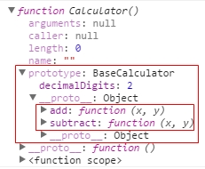
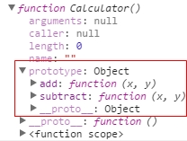
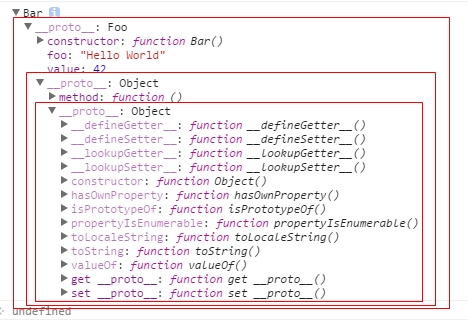
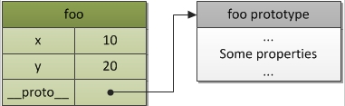
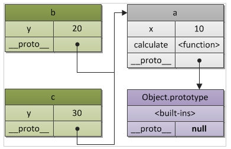
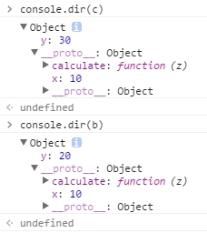
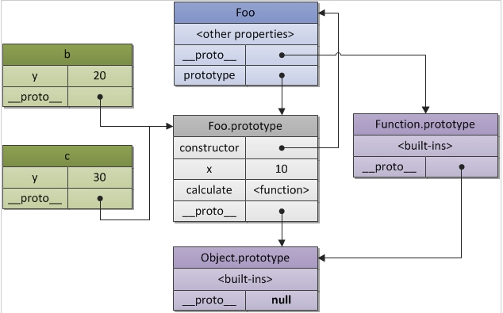
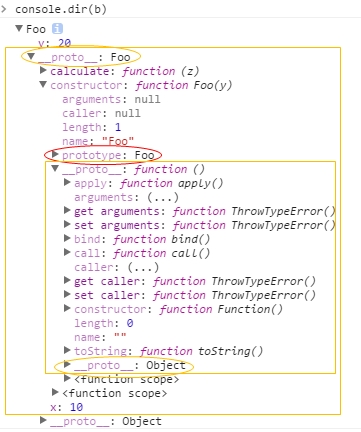

解决一些疑问
什么是原型？
原型是一个对象，其他对象可以通过它实现属性继承。
任何一个对象都可以成为原型么？
是，而且原始类型不可以。
哪些对象有原型？
所有的对象在默认的情况下都有一个原型，因为原型本身也是对象，所以每个原型自身又有一个原型(只有一种例外，默认的对象原型在原型链的顶端。）
那什么又是对象呢?
在javascript中，一个对象就是任何无序键值对的集合,如果它不是一个主数据类型(undefined，null，boolean，number，or string)，那它就是一个对象。
一个对象的真正原型是被对象内部的[[Prototype]]（__proto__）属性(property)所持有。
怎样获取原型对象
ECMA引入了标准对象原型访问器Object.getPrototype(object)，到目前为止只有Firefox和chrome实现了此访问器。
除了IE，其他的浏览器支持非标准的访问器__proto__，如果这两者都不起作用的，我们需要从对象的构造函数中找到的它原型属性。
1 | var a = {}; |
我想在继承中使用原型，那我该怎么做？
如果仅仅只是因为一个实例而使用原型是没有多大意义的，这和直接添加属性到这个实例是一样的。
假如我们已经创建了一个实例对象 ，我们想要继承一个已经存在的对象的功能比如说Array，我们可以像下面这样做( 在支持__proto__ 的浏览器中)
1 | //unusual case and does not work in IE |
原型真正魅力体现在多个实例共用一个通用原型的时候。
原型对象 (注:也就是某个对象的原型所引用的对象)的属性一旦定义，就可以被多个引用它的实例所继承 (注:即这些实例对象的原型所指向的就是这个原型对象)，这种操作在性能和维护方面其意义是不言自明的。
这也是构造函数的存在的原因么?
是的。构造函数提供了一种方便的跨浏览器机制，这种机制允许在创建实例时为实例提供一个通用的原型。
constructor.prototype 属性究竟是什么？
首先，javascript并没有在 构造函数(constructor)和其他函数之间做区分，所以说每个函数都有一个原型属性。
反过来，如果不是函数，将不会有这样一个属性。
请看下面的代码：
1 | //function will never be a constructor but it has a prototype property anyway |
现在我们可以下个定义了：
函数A的原型属性(prototype property )是一个对象，当这个函数被用作构造函数来创建实例时，该函数的原型属性将被作为原型赋值给所有对象实例(注:即所有实例的原型引用的是函数的原型属性)
以下的代码更详细的说明这一切：
1 | //创建一个函数b |
原型
1 |
|
通过执行各个function来得到结果，学习了原型之后，我们可以使用如下方式来美化一下代码。
原型使用方式1
在使用原型之前，我们需要先将代码做一下小修改：
1 | var Calculator = function (decimalDigits, tax) { |
然后，通过给Calculator对象的prototype属性赋值对象字面量来设定Calculator对象的原型。
1 | Calculator.prototype = { |
这样，我们就可以new Calculator对象以后，就可以调用add方法来计算结果了。
原型使用方式2
第二种方式是，在赋值原型prototype的时候使用function立即执行的表达式来赋值，即如下格式：
1 | Calculator.prototype = function () { } (); |
它的好处在前面的帖子里已经知道了，就是可以封装私有的function，通过return的形式暴露出简单的使用名称，以达到public/private的效果，修改后的代码如下：
1 | alculator.prototype = function () { |
同样的方式，我们可以new Calculator对象以后调用add方法来计算结果了。
分步声明
上述使用原型的时候，有一个限制就是一次性设置了原型对象，我们再来说一下如何分步来设置原型的每个属性吧。
1 | var BaseCalculator = function () { |
首先，声明了一个BaseCalculator对象，构造函数里会初始化一个小数位数的属性decimalDigits；
然后通过原型属性设置2个function，分别是add(x,y)和subtract(x,y)
当然你也可以使用前面提到的2种方式的任何一种，我们的主要目的是看如何将BaseCalculator对象设置到真正的Calculator的原型上。
1 | var BaseCalculator = function() { |
创建完上述代码以后，我们来开始：
1 | var Calculator = function () { |
我们可以看到Calculator的原型是指向到BaseCalculator的一个实例上，目的是让Calculator集成它的add(x,y)和subtract(x,y)这2个function；

还有一点要说的是，由于它的原型是BaseCalculator的一个实例，所以不管你创建多少个Calculator对象实例，他们的原型指向的都是同一个实例。
1 | var calc = new Calculator(); |
上面的代码，运行以后，我们可以看到因为Calculator的原型是指向BaseCalculator的实例上的，所以可以访问他的decimalDigits属性值。
那如果我不想让Calculator访问BaseCalculator的构造函数里声明的属性值，那怎么办呢？
这么办：
1 | var Calculator = function () { |

重写原型
我们可以通过继续声明的同样的add代码的形式来达到覆盖重写前面的add功能，代码如下：
1 | //覆盖前面Calculator的add() function |
这样，我们计算得出的结果就比原来多出了一个tax的值，但是有一点需要注意：那就是重写的代码需要放在最后，这样才能覆盖前面的代码。
原型链
在将原型链之前，我们先上一段代码：
1 | function Foo() { |

上面的例子中，test 对象从 Bar.prototype 和 Foo.prototype 继承下来；因此，它能访问 Foo 的原型方法 method。
同时，它也能够访问那个定义在原型上的 Foo 实例属性 value。
需要注意的是 new Bar() 不会创造出一个新的 Foo 实例，而是重复使用它原型上的那个实例；
因此，所有的 Bar 实例都会共享相同的 value 属性。
图解
每当你去定义一个函数的 prototype 的时候，相当于把该实例的__proto__指向一个结构体，那么这个被指向结构体就称为该实例的原型。
1 | var foo = { |

不指定__proto__的时候，foo也会预留一个这样的属性，
如果有明确的指向，那么这个链表就链起来啦。
1 | var a = { |

b和c共享a的属性和方法，同时又有自己的私有属性。
a 的 __proto__默认的也有指向，它指向的是最高级的object.prototype，而object.prototype的__proto__为空。

理解constructor
1 | function Foo(y){ |


属性查找
当查找一个对象的属性时，JavaScript 会向上遍历原型链，直到找到给定名称的属性为止，到查找到达原型链的顶部 - 也就是 Object.prototype - 但是仍然没有找到指定的属性，就会返回 undefined，我们来看一个例子：
1 | function foo() { |
通过代码运行，我们发现subtract是安装我们所说的向上查找来得到结果的，但是add方式有点小不同，这也是我想强调的，就是属性在查找的时候是先查找自身的属性，如果没有再查找原型，再没有，再往上走，一直插到Object的原型上。
所以在某种层面上说，用 for in 语句遍历属性的时候，效率也是个问题。
使用
for..in遍历对象时原理和查找[[Prototype]]链类似，任何可以通过原型链访问到（并且是enumerable）的属性都会被枚举。使用
in操作符来检查属性在对象中是否存在时，同样会查找对象的整条原型链（无论属性是否可枚举）。
还有一点我们需要注意的是，我们可以赋值任何类型的对象到原型上，但是不能赋值原始类型的值，比如如下代码是无效的：
1 | function Foo() {} |
hasOwnProperty 函数
hasOwnProperty 是 Object.prototype 的一个方法，它可是个好东西，他能判断一个对象是否包含自定义属性而不是原型链上的属性，因为 hasOwnProperty 是 JavaScript 中唯一一个 处理属性但是不查找原型链的函数。
1 | // 修改Object.prototype |
只有 hasOwnProperty 可以给出正确和期望的结果，这在遍历对象的属性时会很有用。
没有其它方法可以用来排除原型链上的属性，而不是定义在对象自身上的属性。
但有个恶心的地方是：JavaScript 不会保护 hasOwnProperty 被非法占用，因此如果一个对象碰巧存在这个属性，就需要使用外部的 hasOwnProperty 函数来获取正确的结果。
1 | var foo = { |
但有个恶心的地方是：JavaScript 不会保护 hasOwnProperty被非法占用，因此如果一个对象碰巧存在这个属性，就需要使用外部的 hasOwnProperty 函数来获取正确的结果。
1 | var foo = { |
当检查对象上某个属性是否存在时，hasOwnProperty 是唯一可用的方法。
同时在使用 for in loop 遍历对象时，推荐总是使用 hasOwnProperty 方法，这将会避免原型对象扩展带来的干扰，我们来看一下例子：
1 | // 修改 Object.prototype |
我们没办法改变for in语句的行为，所以想过滤结果就只能使用hasOwnProperty 方法，代码如下：
1 | // foo 变量是上例中的 |